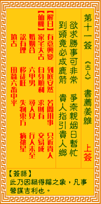

观音灵签第十一签 【书荐姜维】 |
 | |||
欲求好事喜非常 争奈姻婚只暂忙 毕竟到头成好事 贵人接引贵人乡 |
||||
| 【吉凶】 | 上上签 | 【宫位】 | 寅宫 | |
| 【签语】 | 此卦因祸得福之象，凡理营谋吉利也。 | |||
| 【解曰】 | 有意兴变 到底安然 若问用事 只近贵人 | |||
| 【仙机】 | 此签家宅大吉，自身顺利，求财有，交易成，婚姻合，六甲男，寻人见，行人未至，田蚕中平，六畜中平，公讼有理，移徙旺，失物东方， 疾病禳星，山坟吉。 | |||
| 【详解】 | 盼望求得佳事因而欣喜异常，奈何忙碌一时成为亲属的愿望还是暂无消息;须知到最后毕竟好事成双，自有贵人接引前往贵人乡。 有事盼望，到底如斯，若问此事，贵人提携。此签因祸致福之象。凡事则吉。 因祸致福之签。凡事则吉者也。曰欲求好事喜非常。暂时安当守份之时。虽是不合之时。亦可有成之时。贵人自有贵人引导之者。因此。君尔之前途是极光明者。有事盼望到底如斯若问此事贵人提携耶。 此签有”见机行事”之意。提醒当事人，凡事处之泰然。人有时会碰到”不得不”的情况，或许是不可抗拒的、或许是强加于己的，却也只能硬着头皮去做，但心中却惴惴不安。所谓”既来之，则安之”。在事情未成定论之时，无须预设太多立场、杞人忧天。持稳身心、处之泰然，把面临的状况当成一种磨练、一种经验，从这个经验中所得到的，不管是有形或无形的收获，绝对是正面的、出乎意料的。另外在抉择不定时，不妨听取身边亲朋好友的意见，有助事情迎刃而解。 | |||
| 【典故】 | 姜维是三国时人，原本为魏国战将，被诸葛亮收服，改投刘备。姜维智勇双全，最得诸葛亮（孔明）器重，孔明六出祈山，不久病于五丈 原，自知命在旦夕。一日姜维入帐，孔明就将他生平所学的知识，已经著书二十四篇，计十万四千一百一十二字，内有八务、七戒、六恐、五惧之法，全部传授给姜维，希望姜维 能继他之志，竭忠辅主，为国家出力。不久后，孔明去世。书荐姜维，就是《书献姜维》，《三国演义》故事 | |||